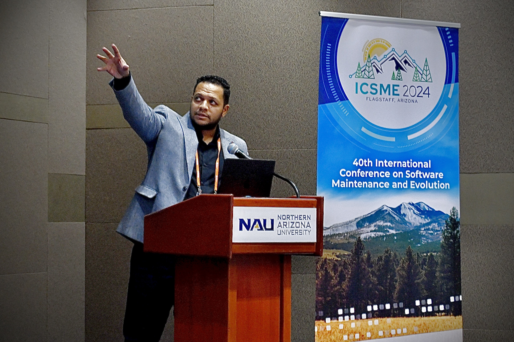

About Me
Amr has excelled as an outstanding educator, a visionary researcher, decisive leader, and a distinguished learner. His mission is to bridge the gap between academia and industry, creating impactful value through his work. Amr holds a Master’s and Ph.D. in Computer Science from Baylor University in 2024, besides holding Bachelor’s and Master’s degrees in Computer and Information Science from Ain Shams University in Egypt. He boasts a wealth of experience in the tech industry, with over nine years as a software technical lead for renowned international companies. Amr is a certified Professional Scrum Master with hands-on experience leading and collaborating within multiple agile teams. Amr is an active member of the scientific research honor society (Sigma Xi) and the academic excellence honor society (Upsilon Pi Epsilon).
Academic Degrees
* Doctoral of Philosophy (PhD) in Computer Science
- Baylor University, USA
- Fostering Microservice Maintainability Assurance through a Comprehensive Framework
* Master of Science in Computer Science
- Baylor University, USA
- Reasoning in Microservice Systems
* Master of Science in Computer Science
- Ain Shams University, Egypt
- Reliable Web Services Through Mobile Cloud Computing